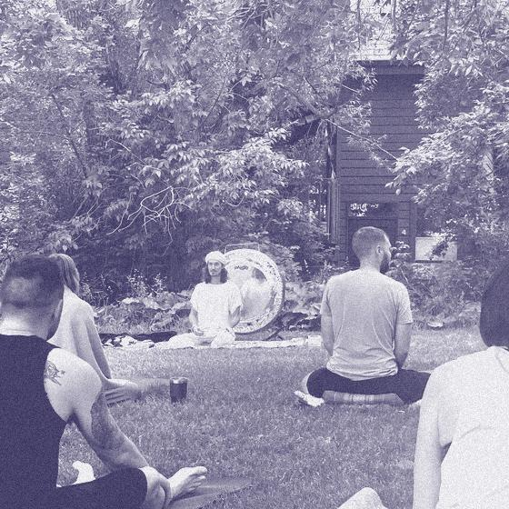
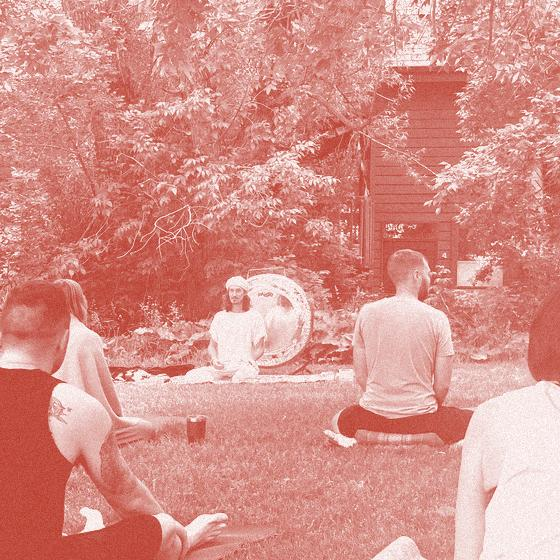
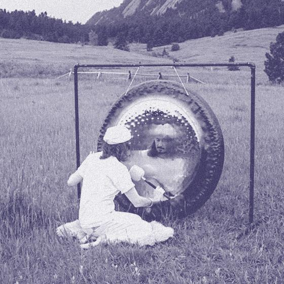
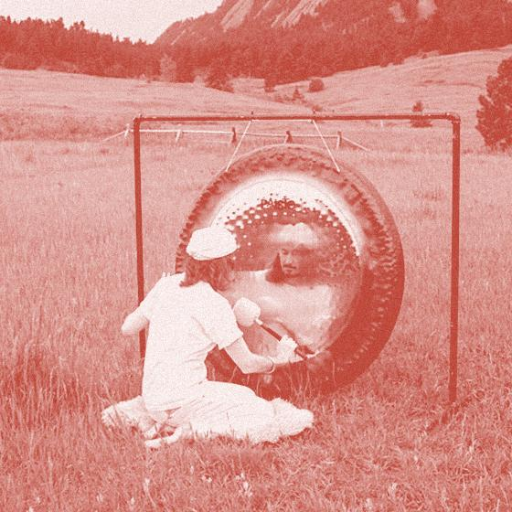

Boulder · 2 upcoming sessions

A public City of Boulder park in the Newlands neighborhood, with an open lawn and views toward the Flatirons; sound baths here are open-air. It was the starting line of the first Bolder Boulder 10K in 1979.



